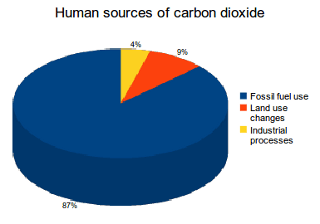

Carbon Dioxide Gas
| Carbon Dioxide | ||
|---|---|---|
|
||
| Info | ||
|
|
||
The Product of respiration (breathing out) |
||
Carbon dioxide levels rise in crowded rooms |
||
Carbon dioxide has no taste, colour or smell |
||
Dry ice is made of carbon dioxide |
||
Carbon dioxide is used to dispense beer |
||
Carbon dioxide can be used to put out fires |
||

Why Carbon Dioxide?
Carbon dioxide is one, if not the main, greenhouse gas people normally think of when asked about climate change. Carbon dioxide has been the by-product of many human processes, since the Industrial Revolution. Carbon emissions from this point onwards have continued to increase, due to the large amounts of manufacturing processes, power plants and other sources continuously increasing. These emissions, all of which are caused by humans, are often split into three different sources, which are fossil fuels, land use changes and industrial processes. The percentage of these emissions are shown on the graph below.

Source: Le Quéré, C. et al. (2013). The global carbon budget 1959-2011.
Fossil Fuels & CO2
Fossil Fuels make up 87% of all carbon emissions from human actions. Fossil fuels are catagorised by how they are produced/found. The main types of fossil fuels are oil and coal. Oil is found underground, and is formed because of increasing pressure from sand on ancient plants and animals such as zooplankton and algae, these areas are called resevoirs and can be both underwater and underground. Oil itself is both used as a raw material and as fuel. The way oil is gathered on land is through what is called a pumpjack, which is the stereotypic oil gathering station that is seen in most media.
Below: 3D Model of a pumpjack oil station by Nicholas Russell

When used as a raw material, oil goes under a multitude of different processes of refinement, based on what needs to be produced. The products that oil can be refined into include, but are not limited too, finished motor gasoline, kerosene-type jet fuel, petroleum coke, hydrocarbon gas liquids, asphalt and road oil, kerosene and finished aviation gasoline.
Below is a graph that shows the spread of outputs from Oil:

Coal, however is very different. Coal, like oil, is found underground and is excavated via mining processes. The types of coal, unlike oil, are very vast, with some such as lignite, peat and the most evolved type, anthracite. Coal is produced in the same ways as oil, but is filled with impurities due to the ways carbon molecules bond. Since coal is basically carbon, the production of it comes from, like oil, squashed ancient plant matter, which contains a high amount of carbon already (as carbon is a building block of life). As coal can be found in many different types, the uses of each differ, with types of coal such as steam coal being used for power, coking coal being used to produce steel (as steel is the combination of carbon with iron), and it is also a main ingredient of things such as activated carbon, carbon fiber and silicon metal.
Both coal and oil are taken from long dead sources of life that are buried deep underground, and both produce a very high amount of CO2. CO2 is produced from burning coal and oil. Carbon bonds with the Oxygen in the air, creating the compound CO2, from C and O2.
What has been done to limit Carbon Dioxide Emissions?
Everyone can help to reduce CO2 emissions. We should ensure we make climate-conscious political decisions. Some politicians such as Donald Trump have failed to address the importance of climate change. The UN will host the 2019 Climate Action Summit on 23 September 2019 to meet the climate challenge. We can choose “green energy” from renewable sources such as solar, wind and wave power, rather than oil, natural gas and coal. Our homes can also become more energy efficient by implementing simple measures such as buying energy and water efficient appliances, insulating better, putting on more clothing rather than turning on a heater, and opening the window instead of turning on the aircon. Other measures we can take to limit CO2 emissions are walking, cycling or taking public transport, recycling, and getting tools and appliances fixed rather than replacing them. For the emissions are unavoidable, offsetting is a worthwhile option. This is done by purchasing ‘carbon credits’ from accredited companies which offer this service, who will then invest those dollars in renewable energy projects or planting trees.